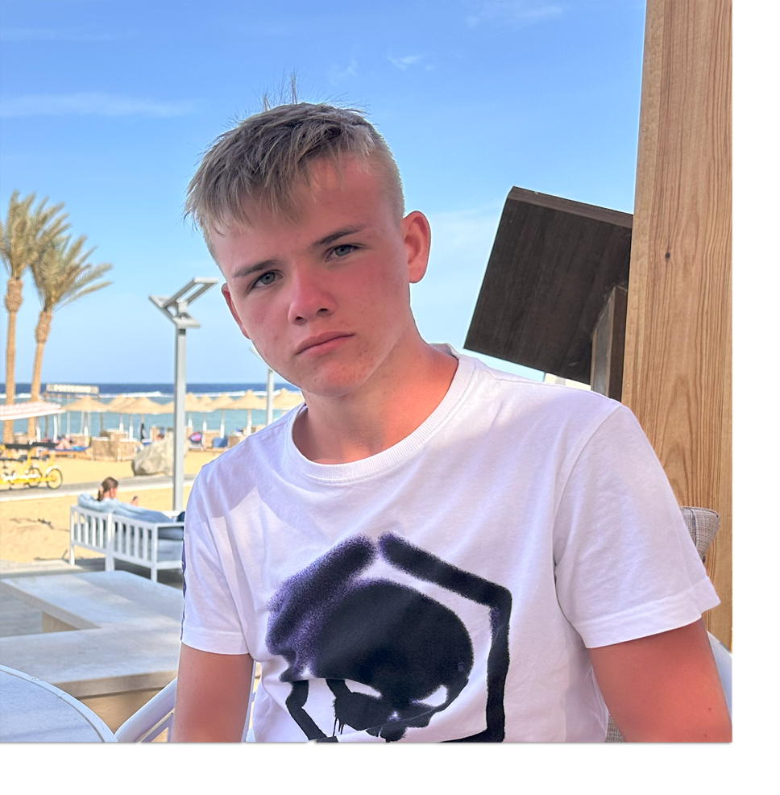
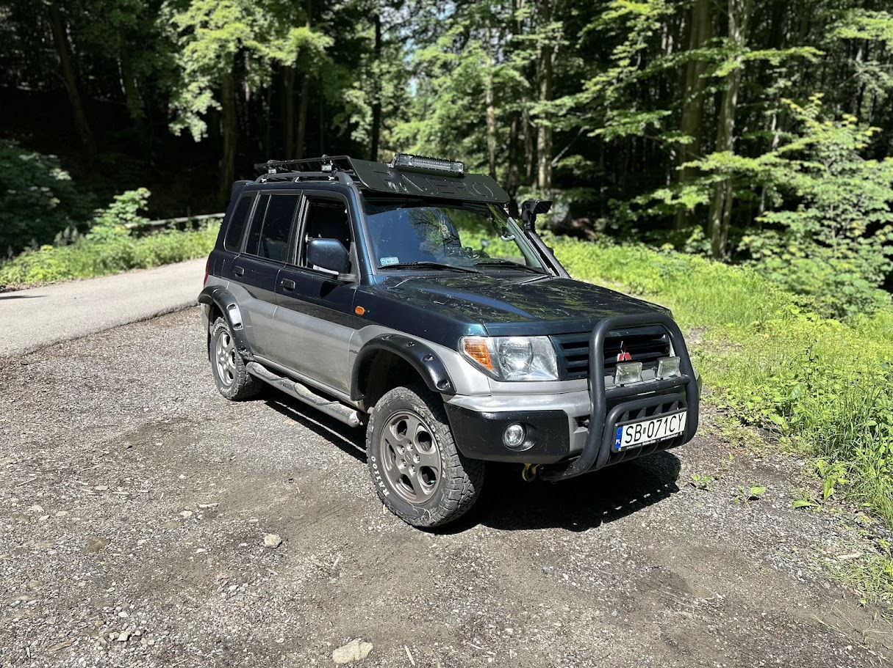
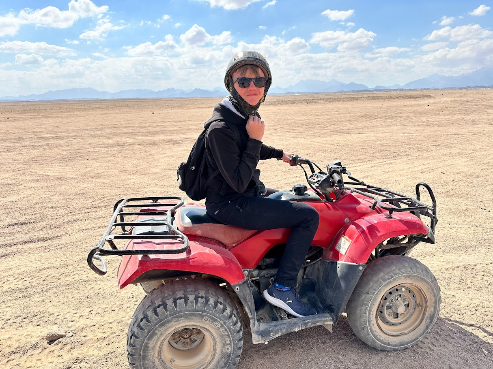

O mnie

Nazywam się Dawid, mam 17 lat i pochodzę z Bielska-Białej. Jestem uczniem V LO, ale to, co naprawdę mnie wyróżnia, to pasje, które kształtują mój charakter i sposób myślenia.
Uwielbiam przygody – w wolnych chwilach wsiadam z tatą do naszego jeepa i ruszamy w góry. Biwakowanie w dzikich miejscach, gdzie nie sięga cywilizacja, daje mi poczucie wolności i uczy, jak radzić sobie w trudnych warunkach. Nic nie zastąpi widoku gwiazd nad głową po dniu pełnym off-roadu i odkrywania nieznanych szlaków.
Jestem też pasjonatem historii, szczególnie tej związanej z III Rzeszą. Zagłębiam się w książki, analizuję wydarzenia i próbuję zrozumieć mechanizmy, które kształtowały świat. Lubię patrzeć na historię nie tylko jako na zbiór dat, ale jako grę strategiczną wielkich umysłów i decyzji.
A skoro o strategii mowa – moją największą pasją są szachy. Gra to dla mnie coś więcej niż rozrywka – to pole bitwy, na którym liczy się logika, cierpliwość i umiejętność przewidywania ruchów przeciwnika. Biorę udział w turniejach, analizuję partie mistrzów i gram online z rywalami z całego świata. W szachach, podobnie jak w życiu, kluczowe jest myślenie kilka kroków do przodu.
Żyję według zasady, że nie ma rzeczy niemożliwych – są tylko wyzwania do pokonania.

